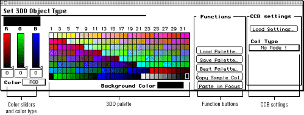
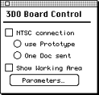
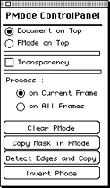
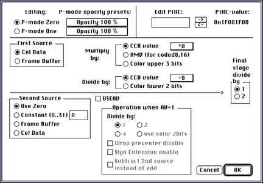

Figure 1: 3DO Options menu.
The command is a toggle: If you select it again, the other commands are dimmed and the Studio/32 palette becomes the default palette.

Figure 2: Set 3DO Object Type dialog.

Figure 3: 3DO Board Control dialog.
The dialog lets you display a current image or cel directly on the NTSC screen using the options in the table below through the 3DO Artist Card available from The 3DO Company.
Table 1: 3DO Board Control dialog options.
--------------------------------------------------------
Option |Description
--------------------------------------------------------
Show Working|Lets you select areas for viewing if the
Area |document is larger than 320 by 240 pixels.
--------------------------------------------------------
Parameters |Only available if the NTSC connection has
|been established. It allows you, for
|example, to turn interpolation on or off.
--------------------------------------------------------
Use |Currently not supported.
Prototype |
--------------------------------------------------------

Figure 5: P-Mode control panel.
The P-Mode control panel lets you define how areas selected for P-Mode0 and P-Mode1 are processed and which areas are set to P-Mode0 and P-Mode1.
Table 2: P-Mode control panel options.
---------------------------------------------------------
Option |Description
---------------------------------------------------------
Document on Top |Makes the document the top layer.
---------------------------------------------------------
PMode on Top |Makes the P-Mode pixels the top layer.
---------------------------------------------------------
Transparency |Lets you use transparency in
|conjunction with P-Mode functionality.
---------------------------------------------------------
On Current Frame |Sets P-Mode for the current frame
|only.
---------------------------------------------------------
On All Frames |Sets P-Mode for all frames in the
|animation.
---------------------------------------------------------
Copy Mask in PMode|Uses a mask you defined and copies it
|into P-Mode.
---------------------------------------------------------
Detect Edges and |Detects the edges of an irregularly
Copy |shaped cel, or the edges of an object
|on a black background, and copies this
|information to the other frames of an
|animation
---------------------------------------------------------
Invert PMode |Inverts P-Mode 0 and P-Mode 1.
---------------------------------------------------------
Figure 6: Load CCB Settings dialog.

Figure 7: Translucency Options dialog.
The dialog lets you do the following:
For tutorial-style examples that illustrate the effects of these options, see Creating 3DO Images and Cels.
Quick Build 3DO Anim command
Concatenates a series of frame files in a folder. Select a folder with
3DOa and 3DOo files.